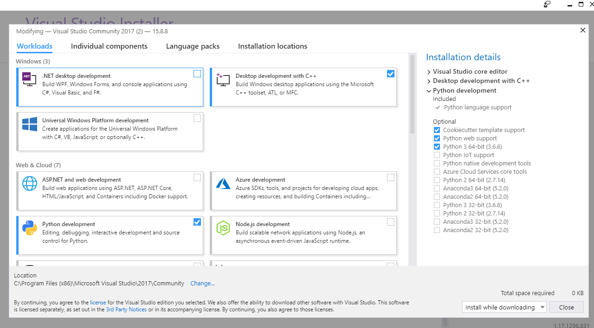

Installing¶
Which Python?¶
Currently, discretize will run on 3.6, 3.7, and 3.8. We recommend that you use the latest version of Python available on Anaconda.
Installing Python¶
Python is available on all major operating systems, but if you are getting started with python it is best to use a package manager such as Anaconda. You can download the package manager and use it to install the dependencies above.
Note
When using Continuum Anaconda, make sure to run:
conda update conda
conda update anaconda
Dependencies¶
numpy 1.8 (or greater)
scipy 0.13 (or greater)
matplotlib 1.3 (or greater)
cython 0.20 (or greater)
We also recommend installing: - pymatsolver 0.1.2 (or greater)
Installing discretize¶
discretize is on conda-forge:
conda install -c conda-forge discretize
discretize is on pypi:
pip install discretize
Attention
Windows users
If the pip install fails, please try installing the most recent version of Visual Studio Community from https://visualstudio.microsoft.com/vs/community/
Within the Python development options, ensure that the following are included

Cookiecutter template support
Python web support
Python 3 64-bit
Installing from Source¶
If you are not a developer then pip is really the preferred way. However, if you are an active developer of discretize you might want to install if from source:
First (you need git):
git clone https://github.com/simpeg/discretize
Second (from the root of the discretize repository):
python setup.py build_ext --inplace
This builds the cython extensions. You will also need to add the discretize directory to your PYTHON_PATH.